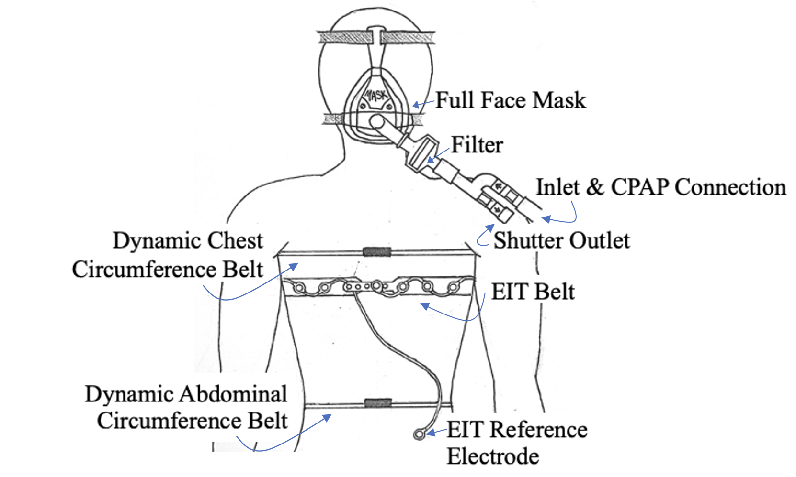

Understanding Expiratory Occlusion
The rising prevalence of respiratory diseases is placing a growing strain on healthcare systems, driven by increasing cases of asthma, chronic obstructive pulmonary disease (COPD), and respiratory infections. Environmental factors such as air pollution and occupational hazards, along with lifestyle choices like smoking and vaping, further contribute to this burden. Smoking is a well-known cause of lung damage, leading to chronic inflammation, airway obstruction, and diseases like COPD and lung cancer. Vaping, often marketed as a safer alternative, has also been linked to respiratory complications, including airway irritation, lung injury, and conditions such as EVALI (e-cigarette or vaping-associated lung injury). As these issues continue to rise, there is a pressing need to better understand respiratory mechanics and develop more effective disease management strategies.
A crucial component of respiratory function is airflow regulation, particularly during exhalation, where various factors can disrupt normal breathing. One such disruption is expiratory occlusion, which occurs when airflow is partially or completely blocked due to airway obstruction, increased resistance, or external factors such as mechanical ventilation settings. This can result in air trapping, increased respiratory effort, and complications like impaired gas exchange or respiratory distress. Expiratory occlusion is commonly observed in conditions such as asthma, COPD, and ventilated patients, making it an important area of study for assessing lung mechanics and improving patient outcomes.
The Data
We used data from the paper Respiratory dataset from PEEP study with expiratory occlusion. The data was collected from 80 participants with various lung conditions. The participants were split evenly into groups based on sex and lung condition as either asthmatic, smoker, vaper, or healthy. The information about the participants was self-reported as well as measured. An example of the setup is shown below.
The respiratory data was collected using a custom-calibrated venturi-based flow and pressure sensor device with one-way valves to separate inspiration and expiration. A CPAP machine provided PEEP, and a filter with a full-face mask was used at the patient interface. Aeration data was simultaneously recorded using an electrical impedance tomography (EIT) device, with an electrode belt placed around the chest. The participant remained seated, and EIT and circumference data were continuously collected after calibration.
You can download the dataset here.
Participant Demographics
Explore the demographics breakdown of the 80 participants.
Respiratory Flow Visualization
This visualization shows breathing patterns across different participant groups. It also provides insights into how lung conditions affect airflow, volume, and breathe rate.
Current Flow
Current Volume
Breathing Rate
Insights
Smokers and vapers tend to have greater variation in tidal volume because their breathing is
less
stable compared to healthy individuals. This is due to several factors:
Airway Irritation and Inflammation – Smoking and vaping expose the lungs to harmful
chemicals, leading to irritation and swelling. This can cause the airways to tighten or
become partially blocked, making breathing less consistent.
Compensatory Breathing Patterns – When the airways are
restricted, smokers and vapers may take deeper breaths to compensate for reduced airflow. On other
occasions, they might take shallower breaths due to discomfort or reduced lung elasticity. These
fluctuations create higher variability in their tidal volume.
Nicotine's Effect on Breathing – Nicotine can temporarily stimulate the respiratory system,
leading to deeper or more erratic breathing, adding to the variation in tidal volume.
Air Trapping and Reduced Elasticity – Long-term smoking and vaping can damage lung tissue,
making it harder to fully exhale. This results in some breaths being larger to compensate for
trapped air, while others are smaller due to airflow limitations.
In contrast, healthy individuals have clear, flexible airways, allowing them to breathe in a more
consistent and predictable way, leading to lower tidal volume variance.